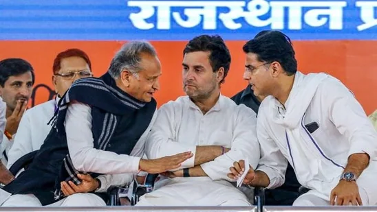
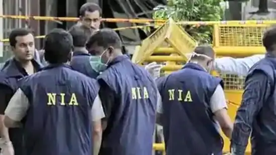

Rajasthan chief minister Ashok Gehlot had called Pilot a traitor, who betrayed the party.
Congress leader Sachin Pilot on Thursday responded to Rajasthan chief minister Ashok Gehlot's ‘gaddar' (traitor) jibe at him, calling it a baseless allegations.
“Ashok Gehlot called me nakara, gaddar... they are baseless allegations. There is no need for it”, Pilot said while reacting to Gehlot's outburst in an interview to NDTV.
“BJP was poorly defeated in Rajasthan when I was the party president. Still, Congress president gave another chance to Gehlot to become CM. Today the priority should be on how we can again win Rajasthan election”, he added.
The state government has written to the Ministry of Home Affairs recommending an NIA investigation into the case, state Home Minister Araga Jnanendra said in a statement.
The state government has written to the Ministry of Home Affairs recommending an NIA investigation into the case, state Home Minister Araga Jnanendra said in a statement.
The Karnataka government on Thursday issued an order to hand over the investigation into Mangaluru blast case to the National Investigation Agency (NIA). The state government has written to the Ministry of Home Affairs recommending an NIA investigation into the case, state Home Minister Araga Jnanendra said in a statement.
On November 19, an explosion took place in an autorickshaw within Kankanadi police station limits, injuring the passenger and the driver. Police called it a terror act and blamed the passenger, identified as Mohammed Shariq, responsible for the incident.